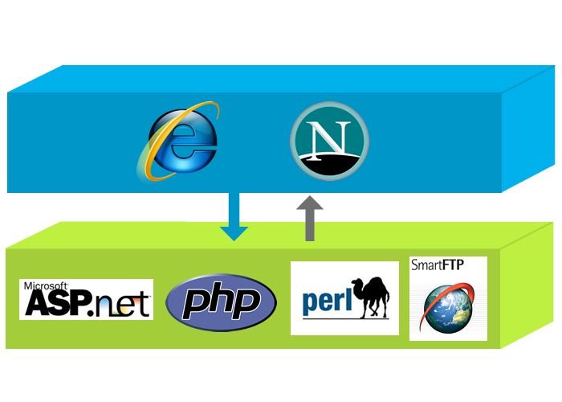
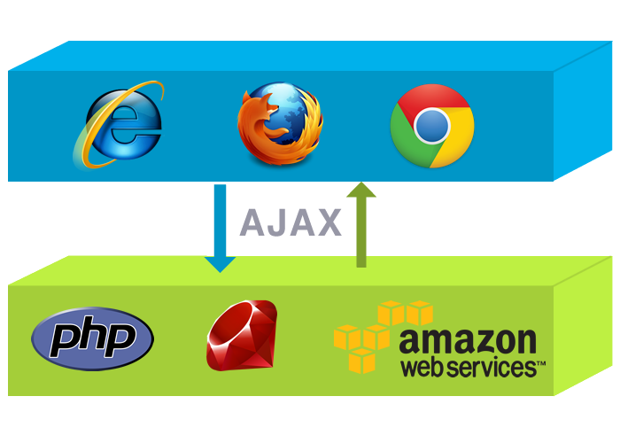

asdfs Adding a Server-Side Backend to your JS-powered App
StackMob & JavaScript
(uses Backbone.js)
Erick Tai | @ericktai
@ericktai
Erick Tai
Development: Before

Development: Better

Development: Today

Development: Today continued
This. But for you.
This isn't just for Facebook, Twitter, or the big guys.
This is for you.
Backend Services
- User Authentication
- Datastore
- Security
- GeoSpatial
- Push
- Hosting
- Social Integration
- Custom Server Side Code
- Analytics
- ...
StackMob: Who are we?
- Mobile Backend Platform
- Lowering barrier of entry
- We handle backend so you can do frontend.
- Giving everyone access to "big company" backend power
- Develop. Scale. Analytics. Revisioning.
StackMob: Who uses us?
We've powered apps:
- Featured in the AppStore
- Top 20 in the AppStore
- TechCrunch Disrupt
- SXSW
- Won Startup Weekend
- Atari
Games, Enterprise Apps, Social...
iOS, Android, JavaScript, Ruby, PHP, Python, Java
Backend via JavaScript
- Services via REST API: → URL via HTTP Request
- Secure it: OAuth
- Connect via AJAX
- Extended Backbone.js Models
REST API
Accessible from any platform
http://api.mob1.stackmob.com/user
../user/login
../todo
../yourcustommethod
Uses Backbone.js
Backbone Files:
http://ajax.googleapis.com/ajax/libs/jquery/1.6.1/jquery.min.js
http://static.stackmob.com/js/json2-min.js
http://static.stackmob.com/js/underscore-1.3.3-min.js
http://static.stackmob.com/js/backbone-0.9.2-min.js
Add StackMob JS
http://ajax.googleapis.com/ajax/libs/jquery/1.6.1/jquery.min.js
http://static.stackmob.com/js/json2-min.js
http://static.stackmob.com/js/underscore-1.3.3-min.js
http://static.stackmob.com/js/backbone-0.9.2-min.js
http://static.stackmob.com/js/stackmob-js-0.2.1-min.js
Initialize
StackMob.init({
appName: 'html5devconf',
clientSubdomain: 'stackmob',
apiVersion: 0
});
Server-Side Persistence: Create
Syntax:
var td = new Todo({
action: 'Prepare for SFJS',
priority: 'high'
});
td.create(); //AJAX call to StackMob REST API
Let's Try It!
var todo = new Todo(
);
todo.create();
Let's check it out!
Web Dashboard

Save to "todo" table
Syntax:
//Declare once per page
var Todo = StackMob.Model.extend({
schemaName: 'todo'
});
...
var td = new Todo({
action: 'Prepare for SFJS',
priority: 'high'
});
td.create();
Asynchronous: Callbacks
td.create({
success: function(model) {
console.debug(model.toJSON());
},
error: function(model, response) {
console.debug('whoops');
}
});
Read from DB
Read Item
var todo = new Todo({ todo_id: '1234' });
todo.fetch(callbacks);
Try Read by ID
var todo = new Todo({ todo_id: });
todo.fetch();
Update DB
Update Item
var todo = new Todo({ todo_id: '1234' });
todo.save({ somethingnew: 'hi'}, callbacks);
Try Updating!
var todo = new Todo({ todo_id: });
todo.save(
);
Delete from DB
Delete Item
var todo = new Todo({ todo_id: '1234' });
todo.destroy(callbacks);
Try Deleting!
var todo = new Todo({ todo_id: });
todo.destroy();
Collections
//From earlier..
var Todo = StackMob.Model.extend({
schemaName: 'todo'
});
...
//Same as Backbone..
var Todos = StackMob.Collection.extend({
model: Todo
});
var todos = new Todos();
todos.fetch();
Fetch your Todos!
var todos = new Todos();
todos.fetch();
Queries: Fetching specific models
Getting Finished Todos
var q = new StackMob.Collection.Query();
q.equals('done', true);
var todos = new Todos();
todos.query(q, callbacks);
Get Finished Todos
var q = new StackMob.Collection.Query();
q.equals('done', true);
var todos = new Todos();
todos.query(q, callbacks);
Filter Queries
var q = new StackMob.Collection.Query();
q.lt('age', 21); //less than
q.gt('followers', 30); //greater than
q.notEquals('age', 5); //not equals
var people = new People(); //StackMob.Collection
people.query(q, callbacks);
And more...
var q = new StackMob.Collection.Query();
q.orderAsc('age'); //order by ascending
q.setRange(0,4); //pagination first 5 results
//select certain fields
q.select('username').select('age').select('followers');
var people = new People(); //StackMob.Collection
people.query(q, callbacks);
Relationships
Related Objects
User has many Todos
Relationship: User → Todos
- Edit User Schema
- Add one-to-many "todos" relationship
Give Todo Items to User
var todo1 = new Todo({ action: 'take out the trash' });
var todo2 = new Todo({ action: 'do the laundry' });
var todo3 = new Todo({ action: 'prepare my slides!' });
var user = new StackMob.User({ username: 'ericktai' });
user.addRelationship('todos', [todo1, todo2, todo3], callbacks);
Let's try it. But first..
Let's see what "ericktai" looks like:
Add Todos to User
Expand: Get Full Related Objects
//Use StackMob.Model#fetchExpanded
var user = new StackMob.User({ username: 'ericktai' });
user.fetchExpanded(1, callbacks);
User Authentication
//User created via user.create()
var user = new StackMob.User({
username: 'chucknorris',
password: 'myfists'
});
user.login(callbacks);
...
StackMob.isUserLoggedIn('chucknorris'); //returns true;
user.isLoggedIn(); //returns true;
Security → OAuth 2.0
- Industry Standard: OAuth 1.0/2.0
- Public/Private Keys identify your app's requests
- FB/Twitter: OAuth 2.0. Username/Password
- In current JS SDK for pre-trials
Access Controls
- Share objects to certain users
- Limit visibility
- Coming very very soon
Even more flexibility: Custom Code
- Java/Scala Server Side SDK
- Write Code - StackMob REST-ifies it
- JS can execute server code via REST API!
- JS receives your custom JSON response too
Or include us in NodeJS
Call Custom Code from JS!
StackMob.customcode('helloworld', {
success: function(result) {
console.debug(result.toJSON())
// Prints { msg: 'Hello World!' }
},
error: function(result) {}
});
Custom Code Example
//Java
public class HelloWorldExample implements
CustomCodeMethod {
@Override
public String getMethodName() {
return "hello_world";
}
@Override
public ResponseToProcess execute(...) {
//Do fancy server side things
Map<String, String> json =
new HashMap<String, String>();
json.put("msg", "hello world!");
return new ResponseToProcess(..., json);
}
}
Defines your REST endpoint
http://api.mob1.stackmob.com/hello_world
//Java
public class HelloWorldExample implements
CustomCodeMethod {
@Override
public String getMethodName() {
return "hello_world";
}
...
}
Defines your return JSON
{ msg: "hello world!" }
//Java
public class HelloWorldExample implements
CustomCodeMethod {
...
@Override
public ResponseToProcess execute(...) {
//Do fancy server side things
Map<String, String> json =
new HashMap<String, String>();
json.put("msg", "hello world!");
return new ResponseToProcess(..., json);
}
}
Hosting & Custom Domains
- Not just development platform
- Host too! Even use your own domain: CNAME
- Hosting Integrated with GitHub
Development & Production Environments
- Different databases
- Only deploy when you're ready!
- Easy rollout/rollback
API Versions
- Backwards support old clients (PhoneGap)
- Concurrently run different versions of your custom code/schemas
Adding a backend with StackMob
- Simple
- Seamless
- Flexible
- Powerful
- Free → Grow
Resources
After Party!
541 8th st, SF, CA (8th and Bryant)
- Free Food: Tacos
- Free Drinks & Beer
- Come meet us and just hang out!